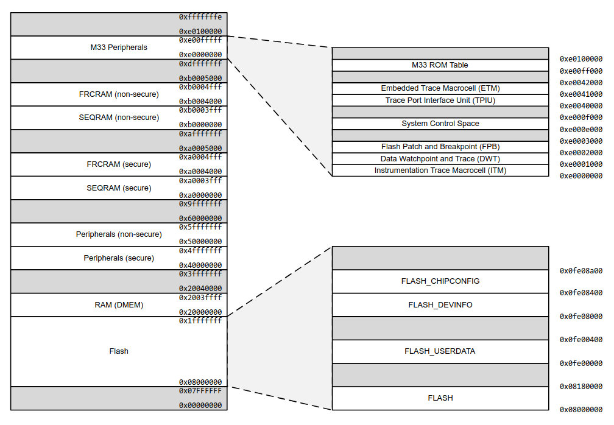
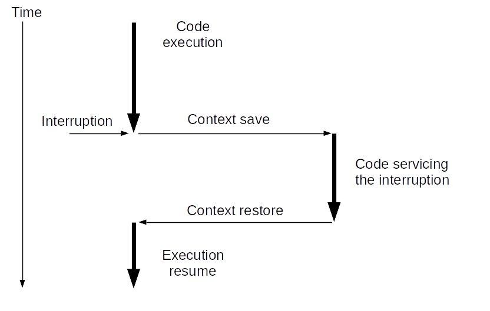
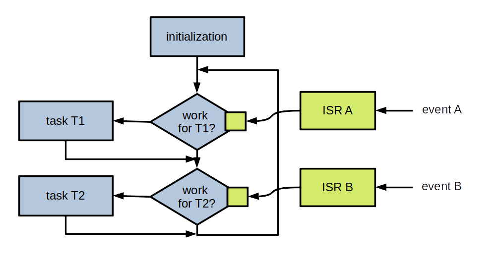
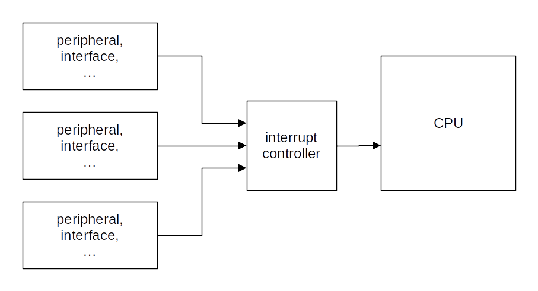

Software development - part 2
Floating-point arithmetic
Integer ranges
- With
nbits:- Signed integer:
[-2n-1, 2n-1 - 1] - Unsigned integer:
[0, 2n - 1]
- Signed integer:
Integer ranges
- 8 bits:
[-128, 127][0, 255]
- 32 bits:
[-2,147,483,648, 2,147,483,647][0, 4,294,967,296]
Problem
- How to encode:
- Very large numbers?
- Rational numbers (
2/3...)? - Irrational numbers (
...)? - Transcendental numbers (
e...)?
When are those types of numbers needed?
- Many algorithms: optimization, calculating distances, surfaces and volumes, etc.
- Many machine learning algorithms
- Simple example: calculate a long distance over the surface of the Earth
A solution: floating-point representation
sign x significand x baseexponent- The significand (or mantissa) controls accuracy
- The exponent controls range
- Base is usually
2
A standard: IEEE 754
- Base 2 or 10
- Single precision: 23 bit significand, 8 bit exponent
- Double precision: 52 bit significand, 11 bit exponent
- ...
IEEE 754 single precision base 2
| 0 | 00000000 | 0000000000000000000000000000000 |
| S | E | M |
- Sign: one bit
- Significand: a decimal value greater than or equal to
1and less than2. Leading1is assumed and not encoded ⇒ actually 24 bits - Exponent: biased, so that resulting value is always positive. Bias is
127
An IEEE 754 converter running in a web browser:
https://www.h-schmidt.net/FloatConverter/IEEE754.html
Some complexity and side effects
- Two zero values: a positive one and a negative one
- Two infinities
- NaN (Not a Number)
- Quiet NaN (⇒ indeterminate operation)
- Signalling NaN (⇒ invalid operation)
- Denormalized numbers
- Rounding ⇒ a calculation result may be different from the theorical value
Floating-point arithmetic and microcontrollers
- Low-cost microcontrollers: no instructions for floating-point arithmetic
- Other microcontrollers: Floating-Point Unit (FPU)
A software solution when no FPU
Floating-point library:
- Implements floating-point arithmetic in software
- Drawbacks:
- Increases the size of the application
- Increases the number of executed instructions
- May be distributed under paid license
Other solutions, depending on the context
- Tensor Flow: post-training integer quantization
- A short distance over the Earth's surface: integer operations are (almost) enough
- Etc.
Memory: code and data
Memory required to run some code:
- The code is stored in read-only memory (Flash)
- Data are stored in read/write memory (RAM)
Note: other configurations are possible.
The memory map is the list of the various addressable memory regions.
Example: the EFR32xG24 memory map
Available memory in the EFR32MG24 Dev Kit:
- Flash: 1536 KB (i.e. 1536 x 1024 bytes)
- RAM: 256 KB (i.e. 256 x 1024 bytes)
This is huge! 🙂
Memory: static, automatic and dynamic storage
uint32_t val1;
int function1(void) {
uint32_t val2;
uint8_t *mem_block;
mem_block = malloc(1024);
...
free(mem_block);
}
val1: static storage
val2: automatic storage
mem_block: dynamic storage
Static storage: allocated at program startup and stays allocated
Automatic storage: allocated when entering the surrounding block, deallocated upon exit
Dynamic storage: allocated/deallocated under the control of the program
Note: try not to use dynamic storage in embedded code!
Nested calls
int res;
int function1(int p) {
int temp = p * 10;
return temp;
}
int function2(int p) {
int temp = function1(p);
return temp + 3;
}
res = function2(3);
...
At line 1: res is allocated from static storage
At line 13: automatic storage is allocated for the argument, 3
At line 9: temp is local to function2. Automatic storage
At line 4: temp is local to function1. Automatic storage
Automatic storage allocated to a function can be reused when the function exits.
Automatic storage is allocated from the stack.
The stack is stored in RAM.
The stack-pointer register points to the "top" of the stack.
Depending on the microcontroller, the stack may grow torwards top of the RAM or bottom of the RAM.
A microcontroller may have more than one stack pointer.
Dynamic storage is allocated from the heap.
The heap is stored in RAM.
Again: try to not use dynamic storage in embedded code (see RTOS part).
What happens when the program requires too much automatic storage?
The stack overwrites other parts of the RAM, for instance the heap, or statically allocated data.
Recursive functions may consume lot of automatic storage: try not to use them in embedded code.
At the end of the build process (compilation + linking): the amount of required static storage is known.
A default stack size is provided by the development environment. It's up to the developer to check that it is enough.
Running a program with too small a stack makes developer's life fun 🙂
Controlling stack size, and other things
The stack size can be modified in the linker script.
Additionally, the linker script tells the linker about the memory map, the heap size, etc.
⇒ It allows to generate a binary file which can be written in the flash memory at the right place.
Additionally, the linker script adds a small initialization code to the program:
- Initializes the stack pointer
- Initializes interrupt vectors (see further)
- Initializes some parts of the RAM
- Initializes some other parts of the microcontroller (clock, etc.)
- Calls the
mainfunction of the program
How an application starts
A reset may occur when:
- The microcontroller board is powered on
- A specific microcontroller pin is set to a specific level
- A specific instruction is executed
- Etc.
A reset sets (most of) the microcontroller in a known state.
The microcontroller fetches the address of the code to be executed.
The code is executed.
Executed code = initialization code + application code (see a previous page).
Interrupts and background task
Events
When the program runs, several events may occur:
- A specific condition from a peripheral
- A software fault condition (e.g. undefined instruction)
- A hardware fault condition (e.g. bus error)
- Etc.
In what follows, we only consider events signalled by peripherals.
Some events
- UART:
- A byte is received
- Transmit buffer is empty
- Parity error on received byte
- Etc.
- ADC:
- Conversion done
- Etc.
- Timer:
- End of period
- Etc.
- GPIO:
- Level transition
- Etc.
From event to interrupt
The microcontroller can be configured so that (some) events generate an interrupt.
Effect of an interrupt
Context:
- Address of next instruction to execute
- Stack pointer
- Other CPU state information
Vocabulary
Code servicing the interrupt: Interrupt Handler, Interrupt Service Routine (ISR).
Code not running in the context of an interrupt: background task.
How are events and ISRs linked?
It depends on the microcontroller. For Arm Cortex M:
- A table contains the starting address of each ISR
- It is named the vector table
- It starts at a known address
| ... | ... |
| ... | USART0_RX_IRQ |
| ... | ... |
| ... | TIMER1 IRQ |
| ... | TIMER0 IRQ |
| ... | ... |
| 0x8000008 | NMI |
| 0x8000004 | Reset |
| 0x8000000 | Initial stack pointer |
Question: what happens if an interrupt is triggered while an ISR is servicing a previous interrupt?
Answer: it depends.
For most microcontrollers:
- Every interrupt may have a priority level (possibly configurable)
- An interrupt of a higher priority interrupts an ISR servicing a lower priority interrupt
- An interrupt of lower or equal level does not interrupt the ISR; it is saved for later servicing
Beware: only the latest interrupt of a given type is saved.
The interrupt will not be lost. But one or more events may be lost.
⇒ Always write short ISRs
Usual interrupt processing
- In the ISR:
- Get information associated to the interrupt
- Store it in a variable shared with the background task
- Set a flag to tell the background task that the interrupt occurred
- In the background task, for a set interrupt flag:
- Reset the flag
- Process the associated information
More detailed view
Microcontroller configuration
- Configure block so that a given event generates an interrupt
- Configure interrupt controller logic so that the CPU can be interrupted by the interrupt
Practice session 08
GPIO and interrupt
- Purpose: use an interrupt to detect button presses
- What to do: follow the instructions provided by the
embedded-systems-for-ML/practice-sessions/08-Gpio-interrupt/README.mdfile
Practice session 09
Timer and interrupt
- Purpose: periodically trigger an interrupt after some period of time
- What to do: follow the instructions provided by the
embedded-systems-for-ML/practice-sessions/09-Timer-interrupt/README.mdfile
Practice session 10
Application and interrupts
- Purpose: display a message after two button presses in a given time interval
- What to do: follow the instructions provided by the
embedded-systems-for-ML/practice-sessions/10-Application-interrupts/README.mdfile
Sleep modes
In many applications, there are not a lot of events
Question: how can energy be saved?
Answer: enter a sleep mode between two scans for events
Exiting from sleep mode


- Entering a sleep mode is important for devices without external power supply
- Usually, several different sleep modes
- The block(s) generating events must be kept active